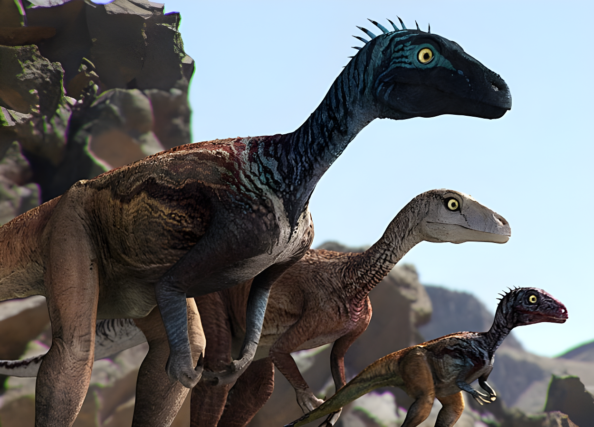
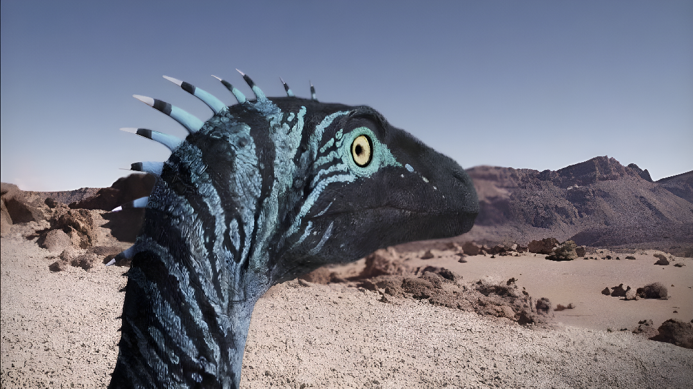
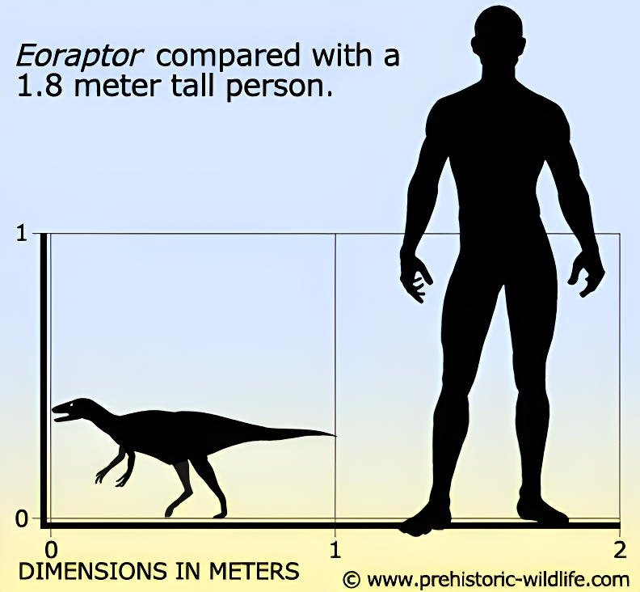
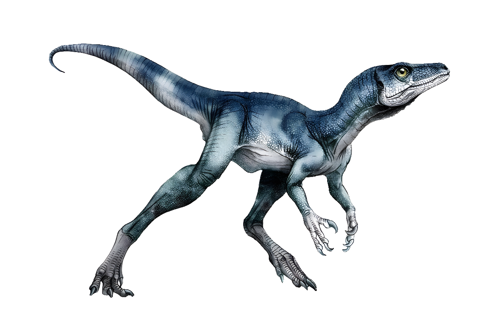
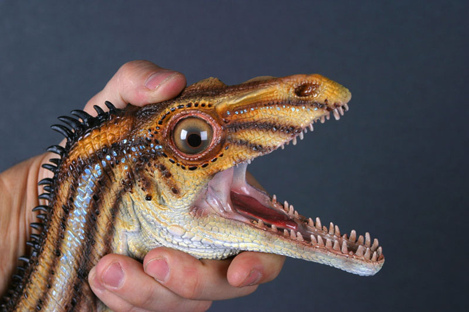
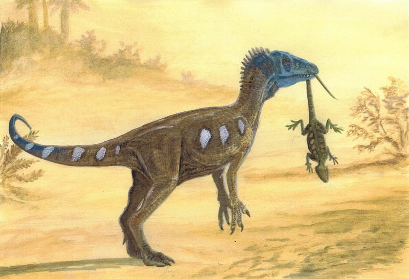
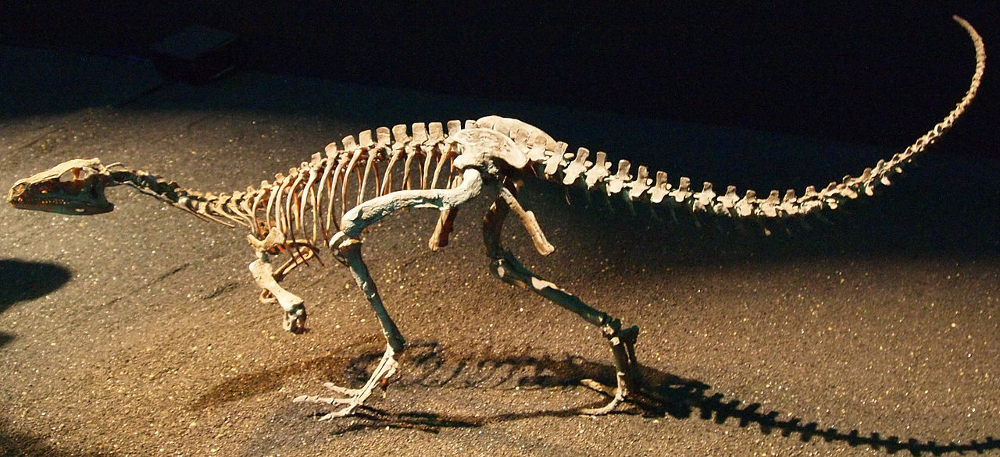

Eoraptor
Kẻ Cướp Bình Minh kỷ Trias
Tổng quan
Kỷ
Triassic
Họ
Eusaurischia
Chi
Eoraptor
Dài
1 m
Cao
0.5 m
Nặng
10 kg
Thức ăn


Eoraptor là một trong những khủng long cổ xưa nhất trong lịch sử. Nó có hai chân, ăn thịt, và sống cách nay 231,4 triệu năm, ở nơi ngày nay là miền Tây Bắc Argentina.
Nguồn: wikipedia.org
Phân bố
Khu vực Nam Mỹ
Thông tin thêm về Eoraptor
Kỷ nguyên và phân bố
Các nhà cổ sinh vật học thừa nhận Eoraptor là tổ tiên của Theropoda và Sauropodomorpha, hoặc ít nhất là họ hàng gần của tổ tiên đó. Eoraptor sống cách đây khoảng 231,4 đến 228 triệu năm trước, vào cuối kỷ Trias, ở khu vực ngày nay là lưu vực Ischigualasto, miền Tây Bắc Argentina, Nam Mỹ. Lưu vực được hình thành từ một con sông thời kỳ mà Eoraptor đã từng sinh sống. Bây giờ khu vực này là một sa mạc và không có nhiều động vật hoang dã, nhưng môi trường ôn hòa và xanh hơn trong kỷ Trias.
Tên khoa học
Được đặt tên bởi Paul Sereno vào năm 1993. Eoraptor trong tiếng Hy Lạp có nghĩa là "Kẻ cướp bóc Bình minh". Loài điển hình là Eoraptor Lunensis, có nghĩa "thung lũng Mặt Trăng", chỉ đến nơi khám phá ra đầu tiên: tiếng Hy Lạp cổ ηως (eos) có nghĩa "bình minh" hay "buổi sáng" và Latinh lunensis có nghĩa "thuộc Mặt Trăng".
Kích thước
Bạn có thể nói rằng Eoraptor trông giống như một mô hình thu nhỏ của các loài khủng long ăn thịt cỡ lớn. Eoraptor rất nhỏ, chỉ bằng kích thước của một con chó cỡ nhỏ đến trung bình và dài khoảng 1m, cao khoảng 0,5m và chỉ nặng khoảng 10kg.
Ngoại hình
Eoraptor đứng bằng hai chân sau. Cơ thể của chúng được xây dựng nhẹ nhàng với đôi chân dài, mảnh và một cái đuôi dài. Cánh tay của nó có 5 ngón có thể được dùng để cầm nắm. Hai ngón tay khá nhỏ. Ba ngón còn lại có móng vuốt sắc nhọn và có thể dùng để giữ con mồi. Bàn chân của Eoraptor có ba ngón chân, và cũng có móng vuốt sắc nhọn.
Các nhà cổ sinh vật học xem ngoại hình chung của Eoraptor là đặc điểm của những loài khủng long được biết đến sớm nhất, mà hậu duệ tiến hóa của chúng sẽ dần dần phát triển các đặc điểm chuyên biệt hơn tùy theo từng môi trường sống. Có lẽ đặc điểm độc đáo nhất đối với loài khủng long có thể là do Eoraptor xương rỗng, nhẹ của nó, đặc biệt khi xem xét rằng hậu duệ cuối cùng của nó sẽ là họ hàng của một số sinh vật lớn nhất được biết là đi bộ trên trái đất. Ngay cả những loài động vật chân đốt hậu duệ lớn như Tyrannosaurus Rex cũng có tổ ong bên trong xương để tạo ra một bộ xương nhẹ hơn nhiều. Nếu phải dùng hai từ để mô tả Eoraptor, đó là “dài” và “nhẹ”. Nó có chân dài, đuôi dài và đầu dài với nhiều răng nhỏ, sắc nhọn.
Chế độ ăn và săn mồi
Giống như hầu hết các loài động vật chân đốt, Eoraptor ăn thịt. Nhưng các nhà cổ sinh vật học nghi ngờ rằng nó cũng ăn thực vật vì răng nó cũng liên quan đến động vật ăn cỏ. Vì vậy, các nhà cổ sinh vật học có xu hướng kết luận nó là một loài động vật ăn tạp. Các nhà cổ sinh vật học cũng nghi ngờ rằng nó có thể là một động vật ăn xác thối.
Eoraptor có hai chân sau dài khoẻ mạnh vì vậy nó di chuyển thẳng đứng trên mặt đất bằng hai chân. Chân của nó nhỏ, nhưng dài, và chiếc đuôi dài rất hữu ích để giữ thăng bằng. Do đó, nó sẽ là một con khủng long chạy khá nhanh so với kích thước. Vận tốc ước tính của Eoraptor khoảng 40km/h khi đuổi theo con mồi.
Khám phá
Hóa thạch đầu tiên của loài khủng long nhỏ giống chân đốt này được tìm thấy ở lưu vực Ischigualasto nằm ở Argentina. Chúng được biết đến do vài bộ xương ở trạng thái tốt. Vị trí ở Argentina nơi tìm thấy hóa thạch Eoraptor cũng chứa hài cốt của các loài động vật đương thời khác. Khủng long chỉ chiếm khoảng 6% trong số hóa thạch mà các nhà cổ sinh vật học phát hiện tại địa điểm này. Điều này cho thấy khủng long đại diện cho một mảnh nhỏ sự sống trên Trái đất trong hệ sinh thái vào thời điểm đó. Nơi an nghỉ cuối cùng của nó trong Hệ tầng Ischigualasto ở tây bắc Argentina cũng cho thấy rằng những con khủng long sơ khai đã phân tán thành các phạm vi nhà khác nhau vào thời điểm Eoraptor tiến hóa.
Thời đại Carnian của Triassic muộn đã tổ chức sự đa dạng hóa và phổ biến của khủng long. Kỷ Carnian là kỷ đầu tiên trong kỷ Trias, và sự phát triển của các loài vẫn tiếp tục trong suốt kỷ này. Điều này bao gồm Eoraptor Lunensis và các loài khủng long khác trong danh sách này.